A shell is software that provides an interface for an operating system's users to provide access to the kernel's services. On Unix-based or Linux-based operating systems, a shell can be invoked through the shell command in the command line interface (CLI), allowing users to direct operations through computer commands, text or script.
This assignment will implement a mini shell similar to the shell of the Unix. The mini shell supports multiple basic commands, such as ls, cat, grep, wc, sleep, etc. It also supports four compound commands, pipe, sequential execution, background and redirection.
When you finished the assignment, zip your code files with the file name student ID-assignment1.zip (e.g SA19225111-assignment1.zip) and submit it to the Postgraduate Information Platform. The deadline is 23:59,2022/10/7 (Beijing time). Any late submission will NOT be accepted.
In this section, let's start by learning what is a shell. The shell is an ordinary program that reads commands from the user and executes them. In Ubuntu, the graphical interface is as shown in the figure below.
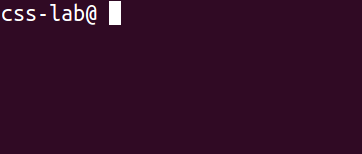The ls (list) command lists all files and folders in your current working directory. You can also specify paths to other directories if you want to view their contents.
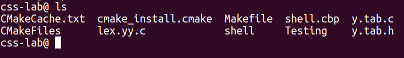
ls [options] [file|dir]
For example:
ls -l
In the above example, it will list all files and folders in your current working directory with the long format - show permissions.
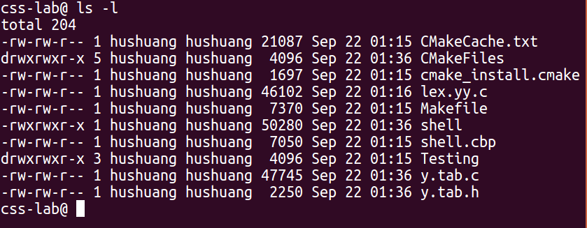The cat (short for “concatenate“) command is one of the most frequently used commands in Linux/Unix-like operating systems. This command allows us to create single or multiple files, view contents of a file, concatenate files , redirect output in terminal or files.
cat [options] [file]
For example:
cat a.txt
In the above example, it will display the contents of the a.txt file in the shell.
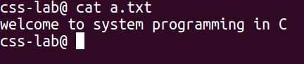The pipe command helps combine two or more commands and is used as input/output concepts in a command. In the Linux operating system, we use more than one pipe in command so that the output of one command before a pipe acts as input for the other command after the pipe.
command 1 | command 2 | command 3 |...
The pipe has much functionality used to filter, sort, and display the text in the list. One of the common examples is described here. Suppose we have a file named name.txt having the names of the students. We have used the cat command to fetch the record of that file.
cat name.txt
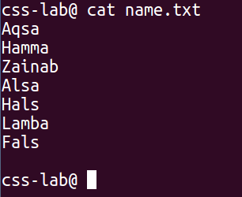
In the above example, the data present in this file is unordered. So, to sort the data, we need to follow a piece of code here.
cat name.txt | sort
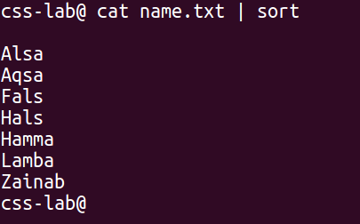
Through the respective output, you can see that students’ names are arranged alphabetically in a sequence from a to z.
How to run two or more terminal commands at once? The semicolon (;) operator allows you to execute multiple commands in succession, regardless of whether each previous command succeeds.
command 1 ; command 2 ; command 3 ; ...
For example:
ls ; pwd ; whoami
In the above example, type three commands on one line, separated by semicolons, and press Enter. This will give you a listing of the current directory ( ls ), find out which directory you’re currently in ( pwd ), and display your login name ( whoami ) all at once.
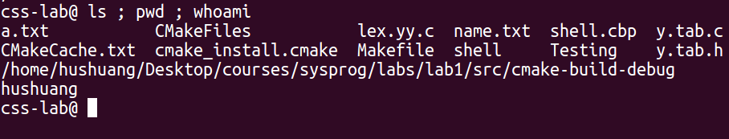You don’t have to put spaces between the semicolons and the commands, either. You can enter the three commands as ls;pwd;whoami. However, spaces make the combined command more readable.
Typically when you run a command in the terminal, you have to wait until the command finishes before you can enter another one. This is called running the command in the foreground or foreground process. When a process runs in the foreground, it occupies your shell, and you can interact with it using the input devices.
What if the command takes a long time to finish, and you want to run other commands in the meantime? You have several options at your disposal. The most obvious and straightforward option is to start a new shell session and run the command in it. Another option is to run the command in the background.
A background process is a process/command that is started from a terminal and runs in the background, without interaction from the user.
To run a command in the background, add the ampersand symbol (&) at the end of the command.
command &
For example:
gedit &
If you start the gedit text editor from your terminal, you can not use the shell until you close the editor. However, when you add an extra & to your command, you'll be able to use the shell immediately.
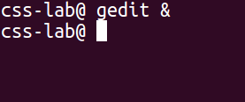Redirection is a feature in Linux such that when executing a command, you can change the standard input/output devices. The basic workflow of any Linux command is that it takes an input and gives an output.
The standard input (stdin) device is the keyboard.
The standard output (stdout) device is the screen.
With redirection, the above standard input/output can be changed.
command 1 > command 2
For example:
ls > listings
Here the output of command ls is re-directed to file “listings” instead of your screen.
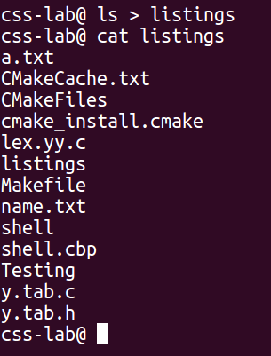As Figure 1.1 shows, Unix takes the traditional form of a kernel, a special program that provides services to running programs. Each running program, called a process, has memory containing instructions, data, and a stack. The instructions implement the program’s computation. The data are the variables on which the computation acts. The stack organizes the program’s procedure calls. A given computer typically has many processes but only a single kernel.
When a process needs to invoke a kernel service, it invokes a system call, one of the calls in the operating system’s interface. The system call enters the kernel; the kernel performs the service and returns. Thus a process alternates between executing in user space and kernel space.

The shell is an ordinary program that reads commands from the user and executes them. The fact that the shell is a user program, and not part of the kernel, illustrates the power of the system call interface: there is nothing special about the shell. It also means that the shell is easy to replace; as a result, modern Unix systems have a variety of shells to choose from, each with its own user interface and scripting features.
When a process is not executing, the operating system saves its CPU registers, restoring them when it next runs the process. The kernel associates a process identifier, or PID, with each process.
A process may create a new process using the fork system call. Fork gives the new process exactly the same memory contents (both instructions and data) as the calling process. Fork returns in both the original and new processes. In the original process, fork returns the new process’s PID. In the new process, fork returns zero. The original and new processes are often called the parent and child.
For example, consider the following program fragment written in the C programming language:
int pid = fork();
if(pid > 0){
printf("parent: child=%d\n", pid);
pid = wait((int *) 0);
printf("child %d is done\n", pid);
} else if(pid == 0){
printf("child: exiting\n");
exit(0);
} else {
printf("fork error\n");
}
The exit system call causes the calling process to stop executing and to release resources such as memory and open files. Exit takes an integer status argument, conventionally 0 to indicate success and 1 to indicate failure. The wait system call returns the PID of an exited (or killed) child of the current process and copies the exit status of the child to the address passed to wait; if none of the caller’s children has exited, wait waits for one to do so. If the caller has no children, wait immediately returns -1. If the parent doesn’t care about the exit status of a child, it can pass a 0 address to wait.
In the example, the output lines
parent: child=1234
child: exiting
might come out in either order (or even intermixed), depending on whether the parent or child gets to its printf call first. After the child exits, the parent’s wait returns, causing the parent to print
parent: child 1234 is done
Although the child has the same memory contents as the parent initially, the parent and child are executing with different memory and different registers: changing a variable in one does not affect the other. For example, when the return value of wait is stored into pid in the parent process, it doesn’t change the variable pid in the child. The value of pid in the child will still be zero.
The exec system call replaces the calling process’s memory with a new memory image loaded from a file stored in the file system. The file must have a particular format, which specifies which part of the file holds instructions, which part is data, at which instruction to start, etc. When exec succeeds, it does not return to the calling program; instead, the instructions loaded from the file start executing at the entry point declared in the ELF header. Exec takes two arguments: the name of the file containing the executable and an array of string arguments. For example:
char *argv[3];
argv[0] = "echo";
argv[1] = "hello";
argv[2] = 0;
exec("/bin/echo", argv);
printf("exec error\n");
This fragment replaces the calling program with an instance of the program /bin/echo running with the argument list /bin/echo. Most programs ignore the first element of the argument array, which is conventionally the name of the program.
The shell uses the above calls to run programs on behalf of users. The main structure of the shell is simple; see main (src/main.c). The main loop reads a line of input from the user . Then it analyzes the input from the user with yyparse. Then it calls fork, which creates a copy of the shell process. The parent calls wait, while the child runs the command. For example, if the user had typed “echo hello” to the shell, yyparse would have been called with “echo hello” as the argument. Cmd_run (src/ast.c) runs the actual command. For “echo hello”, it would call execv (src/ast.c). If execv succeeds then the child will execute instructions from echo instead of Cmd_run. At some point echo will call exit, which will cause the parent to return from wait in main (user/sh.c:145).
A file descriptor is a small integer representing a kernel-managed object that a process may read from or write to. A process may obtain a file descriptor by opening a file, directory, or device, or by creating a pipe, or by duplicating an existing descriptor. For simplicity we’ll often refer to the object a file descriptor refers to as a “file”; the file descriptor interface abstracts away the differences between files, pipes, and devices, making them all look like streams of bytes. We’ll refer to input and output as I/O.
Every process has a private space of file descriptors starting at zero. By convention, a process reads from file descriptor 0 (standard input), writes output to file descriptor 1 (standard output), and writes error messages to file descriptor 2 (standard error). As we will see, the shell exploits the convention to implement I/O redirection and pipelines.
The read and write system calls read bytes from and write bytes to open files named by file descriptors. The call reads at most n bytes from the file descriptor fd, copies them into buf, and returns the number of bytes read. Each file descriptor that refers to a file has an offset associated with it. Read reads data from the current file offset and then advances that offset by the number of bytes read: a subsequent read will return the bytes following the ones returned by the first read. When there are no more bytes to read, read returns zero to indicate the end of the file.
The call write(fd, buf, n) writes n bytes from buf to the file descriptor fd and returns the number of bytes written. Fewer than n bytes are written only when an error occurs. Like read, write writes data at the current file offset and then advances that offset by the number of bytes written: each write picks up where the previous one left off.
The following program fragment (which forms the essence of the program cat) copies data from its standard input to its standard output. If an error occurs, it writes a message to the standard error.
char buf[512];
int n;
for(;;){
n = read(0, buf, sizeof buf);
if(n == 0)
break;
if(n < 0){
fprintf(2, "read error\n");
exit(1);
}
if(write(1, buf, n) != n){
fprintf(2, "write error\n");
exit(1);
}
}
The important thing to note in the code fragment is that cat doesn’t know whether it is reading from a file, console, or a pipe. Similarly cat doesn’t know whether it is printing to a console, a file, or whatever. The use of file descriptors and the convention that file descriptor 0 is input and file descriptor 1 is output allows a simple implementation of cat.
The close system call releases a file descriptor, making it free for reuse by a future open, pipe, or dup system call (see below). A newly allocated file descriptor is always the lowest-numbered unused descriptor of the current process.
File descriptors and fork interact to make I/O redirection easy to implement. Fork copies the parent’s file descriptor table along with its memory, so that the child starts with exactly the same open files as the parent. The system call exec replaces the calling process’s memory but preserves its file table. This behavior allows the shell to implement I/O redirection by forking, re-opening chosen file descriptors in the child, and then calling exec to run the new program. Here is a simplified version of the code a shell runs for the command cat < input.txt :
char *argv[2];
argv[0] = "cat";
argv[1] = 0;
if(fork() == 0) {
close(0);
open("input.txt", O_RDONLY);
exec("cat", argv);
}
After the child closes file descriptor 0, open is guaranteed to use that file descriptor for the newly opened input.txt: 0 will be the smallest available file descriptor. Cat then executes with file descriptor 0 (standard input) referring to input.txt. The parent process’s file descriptors are not changed by this sequence, since it modifies only the child’s descriptors.
Now it should be clear why it is helpful that fork and exec are separate calls: between the two, the shell has a chance to redirect the child’s I/O without disturbing the I/O setup of the main shell. One could instead imagine a hypothetical combined forkexec system call, but the options for doing I/O redirection with such a call seem awkward. The shell could modify its own I/O setup before calling forkexec (and then un-do those modifications); or forkexec could take instructions for I/O redirection as arguments; or (least attractively) every program like cat could be taught to do its own I/O redirection.
Although fork copies the file descriptor table, each underlying file offset is shared between parent and child. Consider this example:
if(fork() == 0) {
write(1, "hello ", 6);
exit(0);
} else {
wait(0);
write(1, "world\n", 6);
}
At the end of this fragment, the file attached to file descriptor 1 will contain the data hello world. The write in the parent (which, thanks to wait, runs only after the child is done) picks up where the child’s write left off. This behavior helps produce sequential output from sequences of shell commands, like (echo hello; echo world) >output.txt.
The dup system call duplicates an existing file descriptor, returning a new one that refers to the same underlying I/O object. Both file descriptors share an offset, just as the file descriptors duplicated by fork do. This is another way to write hello world into a file:
fd = dup(1);
write(1, "hello ", 6);
write(fd, "world\n", 6);
Two file descriptors share an offset if they were derived from the same original file descriptor by a sequence of fork and dup calls. Otherwise file descriptors do not share offsets, even if they resulted from open calls for the same file.
File descriptors are a powerful abstraction, because they hide the details of what they are con-nected to: a process writing to file descriptor 1 may be writing to a file, to a device like the console, or to a pipe.
A pipe is a small kernel buffer exposed to processes as a pair of file descriptors, one for reading and one for writing. Writing data to one end of the pipe makes that data available for reading from the other end of the pipe. Pipes provide a way for processes to communicate.
The following example code runs the program wc with standard input connected to the read end of a pipe.
int p[2];
char *argv[2];
argv[0] = "wc";
argv[1] = 0;
pipe(p);
if(fork() == 0) {
close(0);
dup(p[0]);
close(p[0]);
close(p[1]);
exec("/bin/wc", argv);
} else {
close(p[0]);
write(p[1], "hello world\n", 12);
close(p[1]);
}
The program calls pipe, which creates a new pipe and records the read and write file descriptors in the array p. After fork, both parent and child have file descriptors referring to the pipe. The child calls close and dup to make file descriptor zero refer to the read end of the pipe, closes the file descriptors in p, and calls exec to run wc. When wc reads from its standard input, it reads from the pipe. The parent closes the read side of the pipe, writes to the pipe, and then closes the write side.
If no data is available, a read on a pipe waits for either data to be written or for all file descriptors referring to the write end to be closed; in the latter case, read will return 0, just as if the end of a data file had been reached. The fact that read blocks until it is impossible for new data to arrive is one reason that it’s important for the child to close the write end of the pipe before executing wc above: if one of wc ’s file descriptors referred to the write end of the pipe, wc would never see end-of-file.
In our lab, we can implements pipelines such as grep fork ast.c | wc -l similar to the above code . The child process creates a pipe to connect the left end of the pipeline with the right end. Then it calls fork and Cmd_run for the left end of the pipeline and fork and Cmd_run for the right end, and waits for both to finish. The right end of the pipeline may be a command that itself includes a pipe (e.g., a | b | c), which itself forks two new child processes (one for b and one for c). Thus, the shell may create a tree of processes. The leaves of this tree are commands and the interior nodes are processes that wait until the left and right children complete.
We can use temporary files to achieve functions similar to pipes. For example, the pipeline
echo hello world | wc
could be implemented without pipes as
echo hello world >/tmp/xyz; wc </tmp/xyz
Question 3: What are the advantages of pipes over temporary files in this situation?
To implement this shell, firstly, we need to read a line of input from the user and save the command in a suitable data structure. Then we need to execute it.
Use commands:
sudo apt-get install flex
sudo apt-get install bison
to install tools. With these tools, the project can be compiled and run. After the installation is complete, use commands:
flex --version
bison --version
to check whether the installation was successful. If the installation is successful, the following information will be displayed:
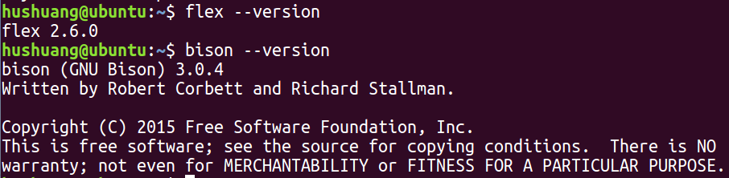Download the source code and unzip. This source code is incomplete, you need to fill in the correct code blocks so that the shell can execute the command correctly.
Let us see ast.h. First define an enumerated type, listing the types of five commands supported by our shell. Then define five structs, corresponding to the basic command and four compound commands, sequential execution, background, redirection, pipe. In addition, this file also declares five functions:
Cmd_t Cmd_Atom_new(struct node *);
Cmd_t Cmd_Seq_new(Cmd_t left, Cmd_t right);
Cmd_t Cmd_Back_new(Cmd_t back);
Cmd_t Cmd_Pipe_new(Cmd_t left, Cmd_t right);
Cmd_t Cmd_Redir_new(Cmd_t left, Cmd_t right, int fd);
The role of these functions is to use arguments to construct the five structs defined above. These functions are called in the process of parsing commands(parser.y). After the parsing process is over, the information in the command is stored in an abstract syntax tree composed of structs.
For example, for this command:
cat hello.txt | grep -n hello > c.txt
In the main.c, after calling the yyparse(), We can get an abstract syntax tree(AST), the simplified structure is as follows:

The leaves of this AST are basic commands. The variable root is a pointer to the root node of the abstract syntax tree.
Funtion:
void Cmd_print(Cmd_t cmd);
can print out the commands read by the shell.
Funtion:
void Cmd_run(Cmd_t cmd);
can execute the commands read by the shell.
In the ast.c, we have given the construction method of leaf nodes(Cmd_t Cmd_Atom_new(struct node *)) and a construction method of internal nodes(Cmd_t Cmd_Seq_new(struct Cmd_t *left, struct Cmd_t *right)).
Cmd_t Cmd_Back_new(Cmd_t back);
Cmd_t Cmd_Pipe_new(Cmd_t left, Cmd_t right);
Cmd_t Cmd_Redir_new(Cmd_t left, Cmd_t right, int fd);
Hint: you can refer to the data structure defined in the ast.h.
The function of the void Cmd_print(Cmd_t cmd) is to print out the commands entered by the user to check whether the abstract syntax tree(AST) of the Step 2 is constructed correctly.
Finally, compile and run the project in Clion and use the following test cases to check whether your answer is correct.
1: cat hello.txt | grep -n hello > c.txt ; ls -l
The result will be as shown in the figure below.
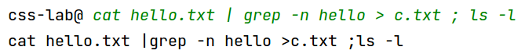
2: sleep 10 &
The result will be as shown in the figure below.
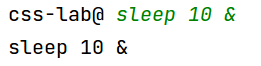
cat hello.txt > c.txt
Then call void Cmd_run(Cmd_t cmd) in main.c and comment out Cmd_print(root).
Finally, compile and run the project in Clion and use the following test cases to check whether your answer is correct.
1: cat hello.txt | grep -n hello > c.txt ; cat c.txt ; ls
Before entering the command, create a file called hello.txt in the current working directory. The content of the file is as follows:
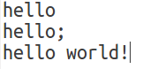The result will be as shown in the figure below.
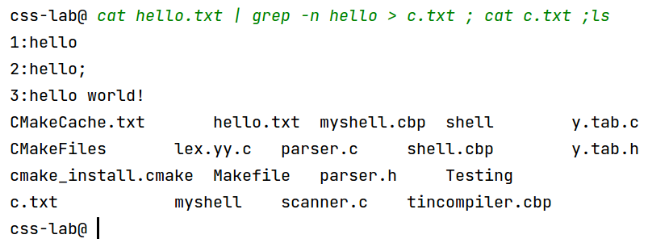
2: sleep 10 &
If you enter the command sleep 10, you cannot use the shell for ten seconds. However, when you add an extra & to your command, you'll be able to use the shell immediately. The result will be as shown in the figure below.
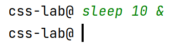Happy hacking!